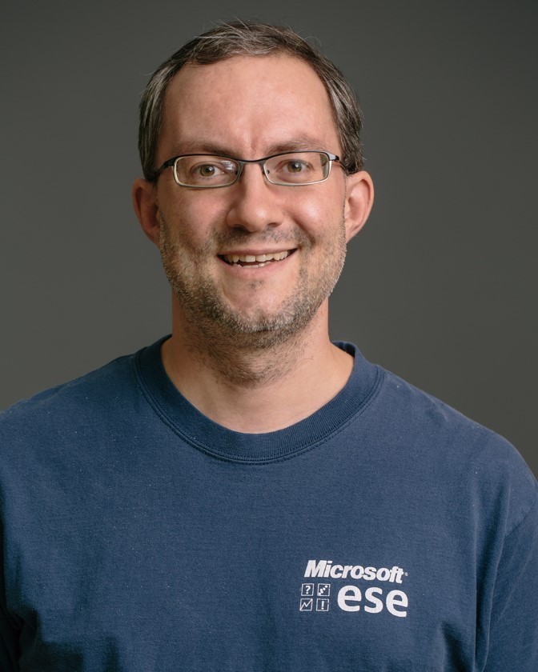
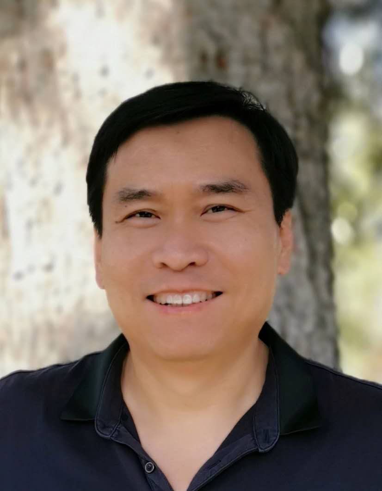

Dr. James Herbsleb (https://herbsleb.org), Carnegie Mellon University
Title: What Makes Organizations Intelligent?
Abstract:
Artificial intelligence has the potential to facilitate collaboration and coordination in software development organizations by facilitating access to knowledge, optimizing workflows, and coordinating interdependent work. But in order to have a positive impact, it is essential that intelligent systems are designed to work harmoniously with the naturally-occurring human processes that make groups of people collectively intelligent. This lecture will survey several of the most important of these human processes, including social networks, transactive memory, and sense-making in transparent environments. It will explain how each mechanism works, how it facilitates organizational performance, and how it could potentially be enhanced with smart technologies.
Bio:
James Herbsleb is a Professor in the Institute for Software Research in the School of Computer Science at Carnegie Mellon University. His research interests lie primarily in the intersection of software engineering, computer-supported cooperative work, and socio-technical systems, focusing on such areas as geographically distributed development teams and large-scale open source development. He holds a PhD in psychology, and an MS in computer science. His research has won several awards, including the ACM Outstanding Research Award (2016), Alan Newell Award for Research Excellence (2014), Most Influential Paper award (ICSE 2010), and distinguished or best paper awards at ICSE, Academy of Management, ESEM, and CSCW. For about two decades, he has worked with many extraordinary colleagues to try to understand the complex and dynamic relationship between human collaboration and the software that the humans are designing and using.
Dr. Tom Zimmerman (http://thomas-zimmermann.com/), Microsoft Research
Title: Decoding Software Productivity with Data Science
Abstract:
Creating and running software produces large amounts of data about the development process and the customer usage. This data can be turned into actionable insight with the help of skilled data scientists. In this tutorial I will give a quick introduction into how data scientists work in the software industry. I will discuss my favorite qualitative and quantitative methods that I use during my work by using productivity of software engineers as an example. The tutorial will include hands on exercises on qualitative data analysis as well as data analysis with PowerBI and R.
Bio:

Thomas Zimmermann is a Senior Researcher in the Research in Software Engineering group at Microsoft Research, Redmond, USA. His research interests include software productivity, data science, recommender systems, and games research. He is best known for his research on systematic mining of software repositories to conduct empirical studies and to build tools to support developers and managers. He is currently General Chair for ASE 2019 and Program Co-Chair for ESEC/FSE 2020. He is Co-Editor in Chief of the Empirical Software Engineering journal and serves on the editorial boards of several journals, including the IEEE Transactions on Software Engineering. He is Chair of the ACM Special Interest Group on Software Engineering. He received his PhD in 2008 from Saarland University in Germany. His homepage is http://thomas-zimmermann.com.
Dr. David Lo (http://www.mysmu.edu/faculty/davidlo/), Singapore Management University
Title: Data Analytics for Automated Software Engineering
Abstract:
Building a working software system is not an easy task. Developers need to spend much effort and resources to ensure that a software is developed well according to a set of functional and non-functional requirements. Quality assurance activities need to be performed to ensure that defects and issues plaguing a system are removed before it is released to the market. These development and quality assurance processes need to be repeated as a software evolves over a long period of time. Due to the complexity of software systems, there is a need for automated tool support to reduce the cost of developing and maintaining systems and increase the reliability of these systems. To address this need, recently data analytics techniques have been used to recover useful and actionable information from passive software data and to convert these into automated tools that can help improve developers' productivity and reduce post-release bugs. Data analytics for automated software engineering is an active research topic that merges software engineering with fields such as data mining, information retrieval, machine learning, natural language processing, and many others. Tools and techniques from these fields are used, extended, specialized, or combined together to recover actionable information from a diverse set of software data. The growth of this new research topic is propelled with the increasing availability of a large amount of software data in the internet stored in source code repositories, discussion forums, blogs, microblogs, bug reporting systems, and many more data sources. This short course introduces participants to this exciting research area.
Bio:

David Lo is an Associate Professor and Lee Kuan Yew Fellow in School of Information Systems, Singapore Management University. He is working in the intersection of software engineering and data mining research. He has more than 10 years of experience in software engineering and data mining research and has more than 300 publications in these areas. He has received more than 10 international research and service awards including four ACM SIGSOFT distinguished paper awards for his work on software analytics. He has served as general and program co-chair of several well-known international conferences (e.g., IEEE/ACM International Conference on Automated Software Engineering, IEEE International Conference on Software Maintenance and Evolution, etc.), and editorial board member of a number of high-quality journals (e.g., Empirical Software Engineering, Neurocomputing, Information Systems, etc.). He is an active researcher in the active field of software analytics which focuses on the design and development of specialized data analysis techniques to solve software engineering problems. He has delivered invited lectures and short courses on the topic in many venues, such as the 2014 International Summer School on Leading Edge Software Engineering, the 13th Estonian Summer School on Computer and System Science, and the 2018 International Summer School on Software Engineering.
Dr. Daniel German (http://turingmachine.org/), University of Victoria
Title: Using Git And Github Repositories For Research In Software Engineering
Abstract:
Git and Github have become fundamental tools in the development process in both open source and commercial development. The first part of this tutorial will describe how these tools are being used. Specifically, using research literature and sample projects, we will cover how git is used for version control of software artifacts, the different workflows that people use, and how the workflows are affected by the organizational structure of the software development teams. Regarding Github, we will discuss its features, including how it enhances git with a simple-to-use graphical user interface that promotes a "pull request" model of software development.
The second part of the tutorial will cover the fundamentals of retrieving data from both sources (git and Github) for the purpose of scientific research. We will cover their data models and the relationship between the data stored in these repositories and the software development process. We will discuss also how to extract development history from both sources directly and using third-party tools and data sources (such as gh-torrent and the other research data sets). We will also discuss the perils and challenges of extracting and using information retrieved from both sources.
At the end of this tutorial students will be able to interpret the information stored in git and github repositories and leverage it in their own research in software engineering.
Bio:
Daniel M. German is Professor in the Department of Computer Science at the University of Victoria, where he conducts research in the areas of mining software repositories, open source software ecosystems and the impact of intellectual property in software engineering.
Dr. Zhenchang Xing (https://cecs.anu.edu.au/people/zhenchang-xing), Australian National University
Title: Road to AI Pair Programmer: Behavior Analytics and Knowledge Graph
Abstract:
In this course, we will review the pros and cons of pair programming practice and envision the technical foundation that will build the road towards AI pair programmers. The course will discuss the basics of behaviour analytics and knowledge graph and how the recent advances in these two areas will enable AI pair programming.
Bio:

Dr. Zhenchang Xing is a Senior Lecturer in the Research School of Computer Science, Australian National University. Previously, he was an Assistant Professor in the School of Computer Science and Engineering, Nanyang Technological University, Singapore, from 2012-2016. Before joining NTU, Dr. Xing was a Lee Kuan Yew Research Fellow in the School of Computing, National University of Singapore from 2009-2012. Dr. Xing’s current research area is in the interdisplinary areas of software engineering, human-computer interaction and applied data analytics. Dr. Xing has over 100 publications in peer-refereed journals and conference proceedings, and have received several distinguished paper awards from top software engineering conferences. Dr. Xing regularly serves on the organization and program committees of the top software engineering conferences, and he will be the program committee co-chair for ICSME2020.